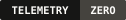
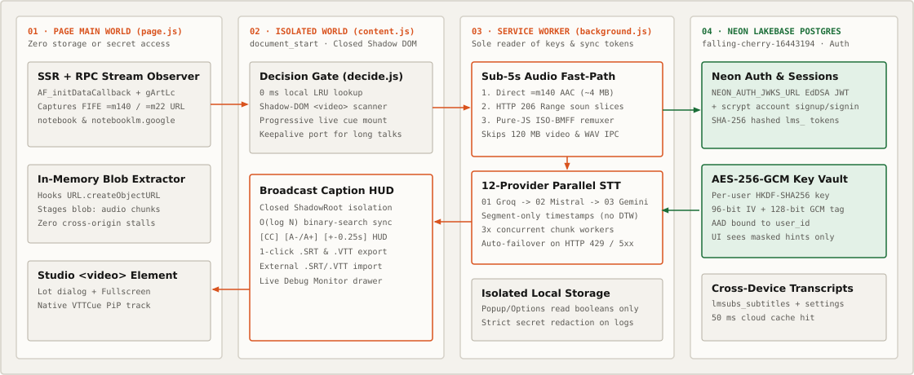

Synchronized subtitles & .SRT export for NotebookLM Video Overviews.
Google NotebookLM generates narrated Video Overviews without closed captions or subtitle downloads. This extension strips the compact AAC audio track locally in JavaScript, transcribes it through your own free-tier Groq, Mistral, or Gemini API key, and injects crisp synchronized captions directly into the player.

Experience the Audio-Only Extraction & Queue Failover Pipeline
Run a simulated NotebookLM Studio Video Overview lifecycle below. Toggle HTTP 429 rate-limiting on Groq to watch the priority queue fail over to Mistral Voxtral automatically, then test the player HUD controls.
12 Supported Speech-to-Text Providers & Free Tiers
Save keys for as many providers as you like and order them in a priority queue. Most users pair #1 Groq with #2 Mistral for fast, zero-cost daily captioning.
| Queue Default | Default Model | Free Tier / Pricing | Timestamp Granularity |
|---|---|---|---|
| #1 Groq | whisper-large-v3-turbo | Free · No Card 8 hrs audio/day, 20 RPM, 25 MB cap | Word + Segment |
| #2 Mistral (Voxtral) | voxtral-mini-transcribe-3 | Free Studio Tier Experiment plan (no card), 48 MB cap | Segment + Speaker ID |
| #3 Google Gemini | gemini-2.5-flash | Free AI Studio Daily free quota + single-pass translation | Direct SubRip (.srt) |
| #4 Deepgram | nova-3 | $200 Free Credit No card (~700+ hours of batch audio) | Word + Utterance |
| #5 AssemblyAI | universal | $50 Free Credit No card (~330 hours Universal-2) | Word (ms precision) |
| #6 Gladia | solaria-1 | €50 Free Credit ~80+ hours pre-recorded audio | Native SRT + Utterance |
| #7 Cloudflare Workers AI | @cf/openai/whisper-large-v3-turbo | 10k Neurons/day Free daily Cloudflare allowance | Word + WebVTT |
| #8 ElevenLabs | scribe_v2 | 10k Credits/mo ~30 min/month free on Scribe v2 | Word (90+ languages) |
| #9 Hugging Face | openai/whisper-large-v3-turbo | Free HF Token Monthly Serverless Inference credits | Chunk timestamps |
| #10 OpenRouter | mistralai/voxtral-mini-transcribe | Unified BYOK router across Voxtral & Whisper models | Segment |
| #11 OpenAI Whisper | whisper-1 | Pay-as-you-go ($0.006 / minute) | Word + Segment |
| #12 Local / Custom URL | Systran/faster-whisper-small | 100% Free Local speaches, faster-whisper-server, whisper.cpp | Verbose JSON / SRT |
Three-World Manifest V3 Architecture
Designed around strict privilege separation: page-context RPC hooks never touch storage, UI pages never read raw API keys, and full video binaries never leave your browser.

1. Passive batchexecute Hook
page.js observes XMLHttpRequest and fetch responses from
/_/LabsTailwindUi/data/batchexecute (R7cb6c create & gArtLc poll)
without mutating or delaying NotebookLM's own streams.
2. Pure-JS ISO-BMFF Audio Remuxer
audio-extract.js parses MP4 boxes (moov, trak, stbl),
strips the heavy H.264 vide track, and recalculates stco offsets into a valid
4–7 MB .m4a in ~12 ms — without bundling 30 MB of ffmpeg.wasm.
3. Dual Shadow-DOM + PiP Captions
player-overlay.js renders balanced 2-line captions inside a closed ShadowRoot for inline &
fullscreen playback while syncing a programmatic VTTCue track for OS Picture-in-Picture.
Clean, Restrained Studio Integration
Built to feel like a native part of NotebookLM Studio — zero clutter, high-contrast captions, and instant export.


Install Unpacked in Chrome, Brave, Arc, or Edge
No build step required when using the prebuilt release archive.
Download & Unzip
Download notebooklm-subtitles-v0.1.1.zip
and extract the notebooklm-subtitles folder.
Load Unpacked
Open chrome://extensions, enable Developer mode, and click
Load unpacked on the extracted folder.
Open NotebookLM
Generate or open any Studio Video Overview — synchronized subtitles appear automatically.